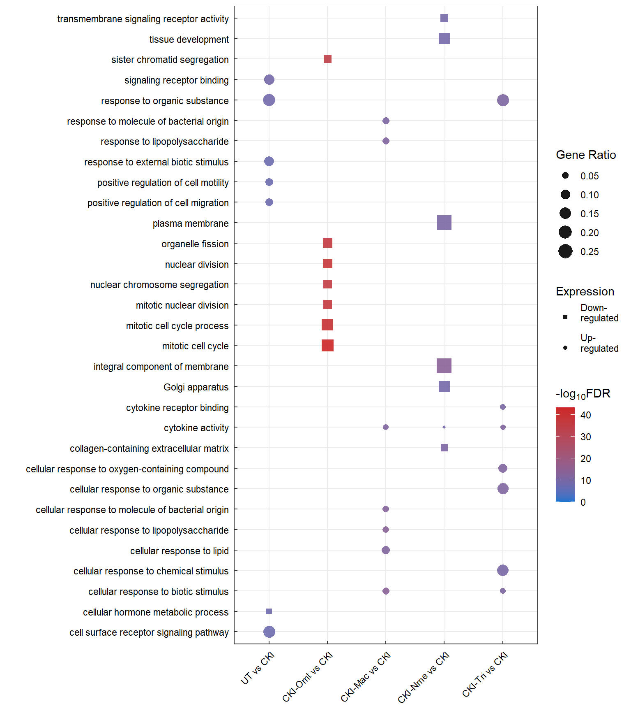

Last updated: 2021-11-13
Checks: 5 2
Knit directory: 01_CKI_DGE/1_analysis/
This reproducible R Markdown analysis was created with workflowr (version 1.6.2). The Checks tab describes the reproducibility checks that were applied when the results were created. The Past versions tab lists the development history.
The R Markdown file has unstaged changes. To know which version of the R Markdown file created these results, you’ll want to first commit it to the Git repo. If you’re still working on the analysis, you can ignore this warning. When you’re finished, you can run wflow_publish to commit the R Markdown file and build the HTML.
The global environment had objects present when the code in the R Markdown file was run. These objects can affect the analysis in your R Markdown file in unknown ways. For reproduciblity it’s best to always run the code in an empty environment. Use wflow_publish or wflow_build to ensure that the code is always run in an empty environment.
The following objects were defined in the global environment when these results were created:
| Name | Class | Size |
|---|---|---|
| anno | data.frame | 2.3 Kb |
| anno_colour | character | 624 bytes |
| anno_colours | list | 912 bytes |
| common | data.frame | 310 Kb |
| comparison_group | data.frame | 1.1 Kb |
| contrast | matrix;array | 1.7 Kb |
| designMatrix | matrix;array | 3.5 Kb |
| dge | DGEList | 12 Mb |
| i | integer | 56 bytes |
| logCPM | matrix;array | 8.4 Kb |
| MAplot | list | 48 bytes |
| my_palette | character | 12.6 Kb |
| NB_dispersion | DGEList | 12.5 Mb |
| qlf | list | 101 Mb |
| qlf_all | list | 49.2 Mb |
| qlf_decideTest | list | 10.8 Kb |
| qlf_dispersion | DGEGLM | 20.6 Mb |
| qlf_sig | list | 37.5 Mb |
| top_unique | list | 256.4 Kb |
| treat | list | 96.1 Mb |
| treat_all | list | 49.2 Mb |
| treat_decideTest | list | 10.8 Kb |
| treat_sig | list | 1.7 Mb |
| unique | data.frame | 4.6 Kb |
| x | character | 120 bytes |
The command set.seed(12345) was run prior to running the code in the R Markdown file. Setting a seed ensures that any results that rely on randomness, e.g. subsampling or permutations, are reproducible.
Great job! Recording the operating system, R version, and package versions is critical for reproducibility.
Nice! There were no cached chunks for this analysis, so you can be confident that you successfully produced the results during this run.
Great job! Using relative paths to the files within your workflowr project makes it easier to run your code on other machines.
Great! You are using Git for version control. Tracking code development and connecting the code version to the results is critical for reproducibility.
The results in this page were generated with repository version 848e971. See the Past versions tab to see a history of the changes made to the R Markdown and HTML files.
Note that you need to be careful to ensure that all relevant files for the analysis have been committed to Git prior to generating the results (you can use wflow_publish or wflow_git_commit). workflowr only checks the R Markdown file, but you know if there are other scripts or data files that it depends on. Below is the status of the Git repository when the results were generated:
Ignored files:
Ignored: .Rhistory
Ignored: .Rproj.user/
Untracked files:
Untracked: 0_data/rds_object/qlf_all.rds
Untracked: 0_data/rds_object/qlf_sig.rds
Untracked: 0_data/rds_object/treat_all.rds
Untracked: 0_data/rds_object/treat_sig.rds
Untracked: 1_analysis/about.html
Untracked: 1_analysis/dge.html
Untracked: 1_analysis/figure/dge.Rmd/NBDispersion-1.png
Untracked: 1_analysis/figure/dge.Rmd/coolmap-1.png
Untracked: 1_analysis/figure/dge.Rmd/heatmap_common-1.png
Untracked: 1_analysis/figure/dge.Rmd/heatmap_unique-1.png
Untracked: 1_analysis/figure/dge.Rmd/qlf_dispersion-1.png
Untracked: 1_analysis/figure/dge.Rmd/volcano_treat-1.png
Untracked: 1_analysis/figure/dge.Rmd/volcano_treat-2.png
Untracked: 1_analysis/figure/dge.Rmd/volcano_treat-3.png
Untracked: 1_analysis/figure/dge.Rmd/volcano_treat-4.png
Untracked: 1_analysis/figure/dge.Rmd/volcano_treat-5.png
Untracked: 1_analysis/figure/go.Rmd/
Untracked: 1_analysis/figure/kegg.Rmd/completePathway-1.png
Untracked: 1_analysis/figure/kegg.Rmd/dotPlot-1.png
Untracked: 1_analysis/figure/kegg.Rmd/partialPathway, -1.png
Untracked: 1_analysis/figure/kegg.Rmd/partialPathway-1.png
Untracked: 1_analysis/figure/setUp.Rmd/afterFiltering-2.png
Untracked: 1_analysis/site_libs/
Untracked: 2_plots/1_setup/after_normalisation.svg
Untracked: 2_plots/2_dge/MA_treat_CKI-Mac vs CKI.svg
Untracked: 2_plots/2_dge/MA_treat_CKI-Nme vs CKI.svg
Untracked: 2_plots/2_dge/MA_treat_CKI-Omt vs CKI.svg
Untracked: 2_plots/2_dge/MA_treat_CKI-Tri vs CKI.svg
Untracked: 2_plots/2_dge/MA_treat_UT vs CKI.svg
Untracked: 2_plots/2_dge/NB_dispersion.svg
Untracked: 2_plots/2_dge/heatmap_logCPM_common.svg
Untracked: 2_plots/2_dge/heatmap_logCPM_unique.svg
Untracked: 2_plots/2_dge/pValue_treat_CKI-Mac vs CKI.svg
Untracked: 2_plots/2_dge/pValue_treat_CKI-Nme vs CKI.svg
Untracked: 2_plots/2_dge/pValue_treat_CKI-Omt vs CKI.svg
Untracked: 2_plots/2_dge/pValue_treat_CKI-Tri vs CKI.svg
Untracked: 2_plots/2_dge/pValue_treat_UT vs CKI.svg
Untracked: 2_plots/2_dge/volcano_treat_CKI-Mac vs CKI.svg
Untracked: 2_plots/2_dge/volcano_treat_CKI-Nme vs CKI.svg
Untracked: 2_plots/2_dge/volcano_treat_CKI-Omt vs CKI.svg
Untracked: 2_plots/2_dge/volcano_treat_CKI-Tri vs CKI.svg
Untracked: 2_plots/2_dge/volcano_treat_UT vs CKI.svg
Untracked: 2_plots/3_go/
Untracked: 2_plots/4_kegg/
Untracked: 3_output/enrichKEGG_treat_sig.xlsx
Untracked: 3_output/goana_treat.xlsx
Untracked: 3_output/kegga_treat_sig.xlsx
Untracked: 3_output/qlf_decideTest.xlsx
Untracked: 3_output/qlf_sig.xlsx
Untracked: 3_output/treat_decideTest.xlsx
Untracked: 3_output/treat_sig.xlsx
Untracked: Meeting Notes.pdf
Unstaged changes:
Modified: 0_data/rds_object/dge.rds
Deleted: 0_data/rds_object/dge_treat_unfiltered.rds
Deleted: 0_data/rds_object/enrichGO_treat.rds
Deleted: 0_data/rds_object/enrichKEGG_treat_filtered.rds
Modified: 0_data/rds_object/qlf.rds
Deleted: 0_data/rds_object/qlf_filtered.rds
Modified: 0_data/rds_object/treat.rds
Deleted: 0_data/rds_object/treat_filtered.rds
Deleted: 0_data/rds_object/treat_unfiltered.rds
Modified: 1_analysis/dge.Rmd
Modified: 1_analysis/figure/dge.Rmd/MAplotCustom_treat-1.png
Modified: 1_analysis/figure/dge.Rmd/MAplotCustom_treat-2.png
Modified: 1_analysis/figure/dge.Rmd/MAplotCustom_treat-3.png
Modified: 1_analysis/figure/dge.Rmd/MAplotCustom_treat-4.png
Modified: 1_analysis/figure/dge.Rmd/MAplotCustom_treat-5.png
Modified: 1_analysis/figure/dge.Rmd/pValueHistogram_treat-1.png
Modified: 1_analysis/figure/dge.Rmd/pValueHistogram_treat-2.png
Modified: 1_analysis/figure/dge.Rmd/pValueHistogram_treat-3.png
Modified: 1_analysis/figure/dge.Rmd/pValueHistogram_treat-4.png
Modified: 1_analysis/figure/dge.Rmd/pValueHistogram_treat-5.png
Modified: 1_analysis/figure/setUp.Rmd/MDSplot-1.png
Modified: 1_analysis/figure/setUp.Rmd/afterFiltering-1.png
Modified: 1_analysis/figure/setUp.Rmd/libraryChecks-1.png
Modified: 1_analysis/figure/setUp.Rmd/pcaSampleGroup-1.png
Modified: 1_analysis/figure/setUp.Rmd/pcaSampleType-1.png
Modified: 1_analysis/figure/setUp.Rmd/visualisingNormalisation-1.png
Modified: 1_analysis/go.Rmd
Modified: 1_analysis/kegg.Rmd
Modified: 1_analysis/setUp.Rmd
Modified: 2_plots/1_setup/counts_before_and_after_filtering.svg
Modified: 2_plots/1_setup/library_size.svg
Modified: 2_plots/1_setup/sample_group_PCA_plot.svg
Modified: 2_plots/1_setup/sample_type_PCA_plot.svg
Deleted: 2_plots/2_dge/MA_plot_treat_CKI-Mac vs CKI.svg
Deleted: 2_plots/2_dge/MA_plot_treat_CKI-Nme vs CKI.svg
Deleted: 2_plots/2_dge/MA_plot_treat_CKI-Omt vs CKI.svg
Deleted: 2_plots/2_dge/MA_plot_treat_CKI-Tri vs CKI.svg
Deleted: 2_plots/2_dge/MA_plot_treat_UT vs CKI.svg
Deleted: 2_plots/2_dge/estimate_dispersion.svg
Modified: 2_plots/2_dge/qlf_dispersion.svg
Deleted: 2_plots/2_dge/qlf_pValue_histogram_CKI-Mac vs CKI.svg
Deleted: 2_plots/2_dge/qlf_pValue_histogram_CKI-Nme vs CKI.svg
Deleted: 2_plots/2_dge/qlf_pValue_histogram_CKI-Omt vs CKI.svg
Deleted: 2_plots/2_dge/qlf_pValue_histogram_CKI-Tri vs CKI.svg
Deleted: 2_plots/2_dge/qlf_pValue_histogram_UT vs CKI.svg
Deleted: 2_plots/2_dge/treat_pValue_histogram_CKI-Mac vs CKI.svg
Deleted: 2_plots/2_dge/treat_pValue_histogram_CKI-Nme vs CKI.svg
Deleted: 2_plots/2_dge/treat_pValue_histogram_CKI-Omt vs CKI.svg
Deleted: 2_plots/2_dge/treat_pValue_histogram_CKI-Tri vs CKI.svg
Deleted: 2_plots/2_dge/treat_pValue_histogram_UT vs CKI.svg
Deleted: 2_plots/2_dge/volcano_plot_treat_CKI-Mac vs CKI.svg
Deleted: 2_plots/2_dge/volcano_plot_treat_CKI-Nme vs CKI.svg
Deleted: 2_plots/2_dge/volcano_plot_treat_CKI-Omt vs CKI.svg
Deleted: 2_plots/2_dge/volcano_plot_treat_CKI-Tri vs CKI.svg
Deleted: 2_plots/2_dge/volcano_plot_treat_UT vs CKI.svg
Deleted: 3_output/enrichGO_treat.xlsx
Deleted: 3_output/enrichKEGG_treat_unfiltered.xlsx
Deleted: 3_output/qlf_filtered.xlsx
Deleted: 3_output/treat_filtered.xlsx
Note that any generated files, e.g. HTML, png, CSS, etc., are not included in this status report because it is ok for generated content to have uncommitted changes.
These are the previous versions of the repository in which changes were made to the R Markdown (1_analysis/go.Rmd) and HTML (docs/go.html) files. If you’ve configured a remote Git repository (see ?wflow_git_remote), click on the hyperlinks in the table below to view the files as they were in that past version.
| File | Version | Author | Date | Message |
|---|---|---|---|---|
| Rmd | 848e971 | Ha Tran | 2021-11-08 | adjust plot size, added dot plot for GO and KEGG, added heatmap for DE genes, minor cosmetic changes |
| html | 848e971 | Ha Tran | 2021-11-08 | adjust plot size, added dot plot for GO and KEGG, added heatmap for DE genes, minor cosmetic changes |
| Rmd | 70049b2 | Ha Tran | 2021-10-31 | Remove old GO and KEGG code, adjusted directory paths, updated KEGG, minor cosmetic changes |
| html | 70049b2 | Ha Tran | 2021-10-31 | Remove old GO and KEGG code, adjusted directory paths, updated KEGG, minor cosmetic changes |
| html | 6823b3c | Ha Tran | 2021-10-30 | Add minor cosmetic changes |
| Rmd | 7a6571b | Ha Tran | 2021-10-30 | minor changes |
| html | 7a6571b | Ha Tran | 2021-10-30 | minor changes |
| html | f5f4f74 | Ha Tran | 2021-10-30 | please please please |
| Rmd | a6d8f8a | Ha Tran | 2021-10-30 | what is happening |
| html | a6d8f8a | Ha Tran | 2021-10-30 | what is happening |
| Rmd | d769a7c | Ha Tran | 2021-10-30 | Upload GO and KEGG analysis |
| html | d769a7c | Ha Tran | 2021-10-30 | Upload GO and KEGG analysis |
# working with data
library(dplyr)
library(magrittr)
library(readr)
library(tibble)
library(reshape2)
library(tidyverse)
# Visualisation:
library(kableExtra)
library(ggplot2)
library(grid)
library(pander)
library(cowplot)
# Custom ggplot
library(ggbiplot)
library(ggrepel)
# Bioconductor packages:
library(edgeR)
library(limma)
library(Glimma)
library(clusterProfiler)
library(org.Hs.eg.db)
# library(enrichplot)
library(biomaRt)
theme_set(theme_minimal())DGElist object containing the raw feature count, sample metadata, and gene metadata, created in the Set Up stage.
# load DGElist previously created in the set up
dge <- readRDS(here::here("0_data/rds_object/dge.rds"))
designMatrix <- readRDS(here::here("0_data/rds_object/designMatrix.rds"))
contrast <- readRDS(here::here("0_data/rds_object/contrastMatrix.rds"))
treat <- readRDS(here::here("0_data/rds_object/treat.rds"))
treat_sig <- readRDS(here::here("0_data/rds_object/treat_sig.rds"))Gene ontology can be perfomred with many packages. edgeR can be used to perform GO enrihcment analysis
edgeR::goanna packagecomparison_group <- colnames(contrast) %>% as.data.frame()
goSummaries <- url("https://uofabioinformaticshub.github.io/summaries2GO/data/goSummaries.RDS") %>%
readRDS()
minPath <- 3
# Create list object
goana_treat <- list()
goana_treat_sig <- list()
for (i in 1:ncol(contrast)) {
# at each iteration, let x = name of each contrast group
x <- comparison_group[i, ]
# populate the goanna list with all GO terms
goana_treat[[x]] <- edgeR::goana.DGELRT(
de = treat[[x]],
geneid = treat[[x]]$genes$entrezid,
FDR = 0.05,
species = "Hs",
trend = T,
ont = "ALL"
)
# extract the top 300 enriched results
goana_treat_sig[[x]] <- topGO(results = goana_treat[[x]], ontology = c("MF", "BP", "CC"), number = 300)
# bind with goSummary to filter out ontologies above level 3
goana_treat_sig[[x]] <- goana_treat_sig[[x]] %>%
rownames_to_column("id") %>%
left_join(goSummaries) %>%
dplyr::filter(shortest_path >= minPath) %>%
column_to_rownames("id")
}comparison_group <- colnames(contrast) %>% as.data.frame()
goSummaries <- url("https://uofabioinformaticshub.github.io/summaries2GO/data/goSummaries.RDS") %>%
readRDS()
minPath <- 3
# Create list object
enrichGO_treat <- list()
for (i in 1:ncol(contrast)) {
# at each iteration, let x = name of each contrast group
x <- comparison_group[i, ]
# populate the enrichGo list with all GO terms
GOresults <- enrichGO(
gene = treat_filtered[[x]]$entrezid,
keyType = "ENTREZID",
ont = "ALL",
OrgDb = org.Hs.eg.db,
pAdjustMethod = "fdr"
)
enrichGO_treat[[x]] <- GOresults@result
enrichGO_treat[[x]] <- enrichGO_treat[[x]] %>%
rownames_to_column("id") %>%
left_join(goSummaries) %>%
dplyr::filter(shortest_path >= minPath) %>%
column_to_rownames("id")
}goana_treat_sig[["UT vs CKI"]][1:30, ] %>%
as.data.frame() %>%
dplyr::select(-c("shortest_path", "longest_path", "terminal_node", "ontology")) %>%
kable(digits = Inf) %>%
kable_styling(bootstrap_options = c("striped", "hover")) %>%
scroll_box(height = "600px")| Term | Ont | N | Up | Down | P.Up | P.Down | |
|---|---|---|---|---|---|---|---|
| GO:0005102 | signaling receptor binding | MF | 861 | 26 | 5 | 5.713193e-10 | 8.416245e-01 |
| GO:0010033 | response to organic substance | BP | 2155 | 39 | 28 | 1.483479e-09 | 1.462338e-03 |
| GO:0034754 | cellular hormone metabolic process | BP | 62 | 0 | 9 | 1.000000e+00 | 7.272928e-09 |
| GO:0007166 | cell surface receptor signaling pathway | BP | 1896 | 36 | 21 | 1.399619e-08 | 6.156658e-02 |
| GO:0030335 | positive regulation of cell migration | BP | 356 | 15 | 4 | 1.993030e-08 | 2.768071e-01 |
| GO:0043207 | response to external biotic stimulus | BP | 857 | 23 | 5 | 2.627677e-08 | 8.049658e-01 |
| GO:2000147 | positive regulation of cell motility | BP | 364 | 15 | 4 | 3.084872e-08 | 2.968605e-01 |
| GO:0051272 | positive regulation of cellular component movement | BP | 372 | 15 | 4 | 4.255778e-08 | 3.122136e-01 |
| GO:0071310 | cellular response to organic substance | BP | 1761 | 32 | 22 | 6.218861e-08 | 7.357403e-03 |
| GO:0034097 | response to cytokine | BP | 796 | 21 | 7 | 7.792062e-08 | 3.824849e-01 |
| GO:0019221 | cytokine-mediated signaling pathway | BP | 516 | 17 | 5 | 9.160960e-08 | 3.531970e-01 |
| GO:0042448 | progesterone metabolic process | BP | 9 | 0 | 4 | 1.000000e+00 | 1.075049e-07 |
| GO:0030647 | aminoglycoside antibiotic metabolic process | BP | 8 | 0 | 4 | 1.000000e+00 | 2.097285e-07 |
| GO:0044597 | daunorubicin metabolic process | BP | 8 | 0 | 4 | 1.000000e+00 | 2.097285e-07 |
| GO:0044598 | doxorubicin metabolic process | BP | 8 | 0 | 4 | 1.000000e+00 | 2.097285e-07 |
| GO:0030638 | polyketide metabolic process | BP | 8 | 0 | 4 | 1.000000e+00 | 2.097285e-07 |
| GO:0008106 | alcohol dehydrogenase (NADP+) activity | MF | 15 | 0 | 5 | 1.000000e+00 | 2.727044e-07 |
| GO:0034308 | primary alcohol metabolic process | BP | 48 | 0 | 7 | 1.000000e+00 | 2.865939e-07 |
| GO:0047023 | androsterone dehydrogenase activity | MF | 3 | 0 | 3 | 1.000000e+00 | 3.922194e-07 |
| GO:0071395 | cellular response to jasmonic acid stimulus | BP | 3 | 0 | 3 | 1.000000e+00 | 3.922194e-07 |
| GO:0047086 | ketosteroid monooxygenase activity | MF | 3 | 0 | 3 | 1.000000e+00 | 3.922194e-07 |
| GO:0018636 | phenanthrene 9,10-monooxygenase activity | MF | 3 | 0 | 3 | 1.000000e+00 | 3.922194e-07 |
| GO:0009753 | response to jasmonic acid | BP | 3 | 0 | 3 | 1.000000e+00 | 3.922194e-07 |
| GO:0071357 | cellular response to type I interferon | BP | 73 | 7 | 1 | 3.952442e-07 | 3.976688e-01 |
| GO:0060337 | type I interferon signaling pathway | BP | 73 | 7 | 1 | 3.952442e-07 | 3.976688e-01 |
| GO:0016477 | cell migration | BP | 923 | 22 | 9 | 4.109866e-07 | 2.859990e-01 |
| GO:0004033 | aldo-keto reductase (NADP) activity | MF | 17 | 0 | 5 | 1.000000e+00 | 4.240638e-07 |
| GO:0004032 | alditol:NADP+ 1-oxidoreductase activity | MF | 8 | 0 | 4 | 1.000000e+00 | 4.350426e-07 |
| GO:0071345 | cellular response to cytokine stimulus | BP | 731 | 19 | 7 | 4.404555e-07 | 3.012425e-01 |
| GO:0045595 | regulation of cell differentiation | BP | 1003 | 23 | 13 | 4.896438e-07 | 4.858142e-02 |
goana_treat_sig[["CKI-Mac vs CKI"]][1:30, ] %>%
as.data.frame() %>%
dplyr::select(-c("shortest_path", "longest_path", "terminal_node", "ontology")) %>%
kable(digits = Inf) %>%
kable_styling(bootstrap_options = c("striped", "hover")) %>%
scroll_box(height = "600px")| Term | Ont | N | Up | Down | P.Up | P.Down | |
|---|---|---|---|---|---|---|---|
| GO:0071216 | cellular response to biotic stimulus | BP | 150 | 20 | 1 | 7.984907e-15 | 8.517907e-01 |
| GO:0071222 | cellular response to lipopolysaccharide | BP | 124 | 18 | 1 | 4.324524e-14 | 7.941049e-01 |
| GO:0071219 | cellular response to molecule of bacterial origin | BP | 129 | 18 | 1 | 1.065904e-13 | 8.106977e-01 |
| GO:0071396 | cellular response to lipid | BP | 362 | 26 | 8 | 9.487182e-13 | 7.672803e-02 |
| GO:0005125 | cytokine activity | MF | 78 | 15 | 5 | 2.090876e-12 | 7.753699e-03 |
| GO:0032496 | response to lipopolysaccharide | BP | 197 | 20 | 4 | 2.560890e-12 | 2.529714e-01 |
| GO:0002237 | response to molecule of bacterial origin | BP | 207 | 20 | 5 | 8.692843e-12 | 1.390418e-01 |
| GO:1901701 | cellular response to oxygen-containing compound | BP | 780 | 36 | 23 | 1.338162e-11 | 7.452955e-05 |
| GO:0009617 | response to bacterium | BP | 315 | 24 | 9 | 1.412362e-11 | 2.598358e-02 |
| GO:0005126 | cytokine receptor binding | MF | 136 | 16 | 1 | 4.289058e-11 | 8.302874e-01 |
| GO:0062023 | collagen-containing extracellular matrix | CC | 201 | 6 | 18 | 8.048545e-02 | 3.946609e-10 |
| GO:0033993 | response to lipid | BP | 542 | 28 | 16 | 6.993144e-10 | 1.375302e-03 |
| GO:0071310 | cellular response to organic substance | BP | 1761 | 53 | 44 | 1.124470e-09 | 1.537001e-06 |
| GO:0048018 | receptor ligand activity | MF | 162 | 17 | 10 | 1.192981e-09 | 2.102893e-04 |
| GO:0030546 | signaling receptor activator activity | MF | 168 | 17 | 10 | 1.943111e-09 | 2.709752e-04 |
| GO:0019221 | cytokine-mediated signaling pathway | BP | 516 | 26 | 5 | 3.945078e-09 | 7.754062e-01 |
| GO:0006954 | inflammatory response | BP | 387 | 23 | 11 | 6.552197e-09 | 1.561263e-02 |
| GO:0006952 | defense response | BP | 925 | 36 | 17 | 8.486203e-09 | 8.929437e-02 |
| GO:1901700 | response to oxygen-containing compound | BP | 1067 | 38 | 34 | 1.044894e-08 | 2.318140e-07 |
| GO:0010033 | response to organic substance | BP | 2155 | 58 | 54 | 1.235957e-08 | 6.148077e-08 |
| GO:0071345 | cellular response to cytokine stimulus | BP | 731 | 30 | 9 | 2.003667e-08 | 5.497199e-01 |
| GO:0070887 | cellular response to chemical stimulus | BP | 2128 | 57 | 51 | 2.292659e-08 | 7.541645e-07 |
| GO:0019730 | antimicrobial humoral response | BP | 34 | 8 | 2 | 2.810355e-08 | 8.283040e-02 |
| GO:0006959 | humoral immune response | BP | 82 | 11 | 3 | 6.604572e-08 | 1.260954e-01 |
| GO:0002526 | acute inflammatory response | BP | 53 | 9 | 1 | 7.372860e-08 | 5.278550e-01 |
| GO:0043207 | response to external biotic stimulus | BP | 857 | 32 | 14 | 9.805477e-08 | 1.924972e-01 |
| GO:0036499 | PERK-mediated unfolded protein response | BP | 22 | 6 | 0 | 1.235991e-07 | 1.000000e+00 |
| GO:0034097 | response to cytokine | BP | 796 | 30 | 11 | 1.380023e-07 | 3.941103e-01 |
| GO:0005102 | signaling receptor binding | MF | 861 | 32 | 28 | 2.084310e-07 | 5.373494e-06 |
| GO:0071495 | cellular response to endogenous stimulus | BP | 896 | 24 | 30 | 4.316526e-04 | 2.574194e-07 |
goana_treat_sig[["CKI-Nme vs CKI"]][1:30, ] %>%
as.data.frame() %>%
dplyr::select(-c("shortest_path", "longest_path", "terminal_node", "ontology")) %>%
kable(digits = Inf) %>%
kable_styling(bootstrap_options = c("striped", "hover")) %>%
scroll_box(height = "600px")| Term | Ont | N | Up | Down | P.Up | P.Down | |
|---|---|---|---|---|---|---|---|
| GO:0016021 | integral component of membrane | CC | 2641 | 26 | 102 | 7.408738e-01 | 1.660480e-14 |
| GO:0062023 | collagen-containing extracellular matrix | CC | 201 | 3 | 23 | 4.110607e-01 | 1.615989e-11 |
| GO:0005886 | plasma membrane | CC | 2806 | 34 | 98 | 2.460999e-01 | 3.076542e-11 |
| GO:0005125 | cytokine activity | MF | 78 | 12 | 5 | 2.739672e-10 | 3.283275e-02 |
| GO:0004888 | transmembrane signaling receptor activity | MF | 316 | 4 | 28 | 5.669704e-01 | 3.036367e-10 |
| GO:0009888 | tissue development | BP | 1184 | 20 | 53 | 2.320772e-02 | 7.289877e-10 |
| GO:0005794 | Golgi apparatus | CC | 1199 | 5 | 51 | 9.930718e-01 | 7.308000e-10 |
| GO:0048731 | system development | BP | 2913 | 43 | 94 | 7.402066e-03 | 1.358033e-09 |
| GO:0048018 | receptor ligand activity | MF | 162 | 15 | 10 | 1.740726e-09 | 3.497694e-03 |
| GO:0031226 | intrinsic component of plasma membrane | CC | 719 | 10 | 41 | 3.505146e-01 | 2.569726e-09 |
| GO:0030546 | signaling receptor activator activity | MF | 168 | 15 | 10 | 2.627992e-09 | 4.312956e-03 |
| GO:0071216 | cellular response to biotic stimulus | BP | 150 | 13 | 2 | 4.019343e-09 | 7.583237e-01 |
| GO:0005783 | endoplasmic reticulum | CC | 1384 | 15 | 54 | 3.906175e-01 | 5.962699e-09 |
| GO:0010033 | response to organic substance | BP | 2155 | 48 | 70 | 1.410919e-08 | 5.436548e-08 |
| GO:0010466 | negative regulation of peptidase activity | BP | 132 | 4 | 15 | 4.872328e-02 | 1.913706e-08 |
| GO:0071310 | cellular response to organic substance | BP | 1761 | 42 | 58 | 2.082859e-08 | 7.836492e-07 |
| GO:0043230 | extracellular organelle | CC | 1455 | 17 | 54 | 2.561504e-01 | 2.530134e-08 |
| GO:1903561 | extracellular vesicle | CC | 1455 | 17 | 54 | 2.561504e-01 | 2.530134e-08 |
| GO:1901700 | response to oxygen-containing compound | BP | 1067 | 26 | 45 | 1.883099e-05 | 2.595485e-08 |
| GO:0036499 | PERK-mediated unfolded protein response | BP | 22 | 6 | 0 | 2.713962e-08 | 1.000000e+00 |
| GO:0030198 | extracellular matrix organization | BP | 228 | 9 | 20 | 1.192361e-03 | 3.438846e-08 |
| GO:0043062 | extracellular structure organization | BP | 229 | 9 | 20 | 1.255275e-03 | 3.886146e-08 |
| GO:0045229 | external encapsulating structure organization | BP | 229 | 9 | 20 | 1.256603e-03 | 3.895788e-08 |
| GO:0070062 | extracellular exosome | CC | 1443 | 17 | 53 | 2.401018e-01 | 4.309503e-08 |
| GO:0071222 | cellular response to lipopolysaccharide | BP | 124 | 11 | 2 | 5.368661e-08 | 6.611622e-01 |
| GO:0016477 | cell migration | BP | 923 | 25 | 41 | 6.350122e-06 | 6.484022e-08 |
| GO:0010951 | negative regulation of endopeptidase activity | BP | 127 | 4 | 14 | 4.348211e-02 | 8.615818e-08 |
| GO:0005788 | endoplasmic reticulum lumen | CC | 196 | 8 | 17 | 8.561037e-04 | 8.660375e-08 |
| GO:0071219 | cellular response to molecule of bacterial origin | BP | 129 | 11 | 2 | 9.053579e-08 | 6.882773e-01 |
| GO:0019730 | antimicrobial humoral response | BP | 34 | 7 | 3 | 9.537951e-08 | 3.151554e-02 |
goana_treat_sig[["CKI-Omt vs CKI"]][1:30, ] %>%
as.data.frame() %>%
dplyr::select(-c("shortest_path", "longest_path", "terminal_node", "ontology")) %>%
kable(digits = Inf) %>%
kable_styling(bootstrap_options = c("striped", "hover")) %>%
scroll_box(height = "600px")| Term | Ont | N | Up | Down | P.Up | P.Down | |
|---|---|---|---|---|---|---|---|
| GO:0000278 | mitotic cell cycle | BP | 883 | 8 | 113 | 0.97944266 | 3.409209e-44 |
| GO:1903047 | mitotic cell cycle process | BP | 772 | 8 | 102 | 0.93902066 | 4.179072e-41 |
| GO:0000280 | nuclear division | BP | 342 | 7 | 71 | 0.38973819 | 1.936741e-39 |
| GO:0140014 | mitotic nuclear division | BP | 269 | 4 | 61 | 0.64460060 | 8.549333e-38 |
| GO:0048285 | organelle fission | BP | 383 | 7 | 73 | 0.51156505 | 9.224554e-38 |
| GO:0098813 | nuclear chromosome segregation | BP | 218 | 2 | 56 | 0.89135065 | 8.845251e-37 |
| GO:0000819 | sister chromatid segregation | BP | 177 | 1 | 50 | 0.94837163 | 7.528457e-36 |
| GO:0000070 | mitotic sister chromatid segregation | BP | 153 | 1 | 46 | 0.92289952 | 2.321270e-34 |
| GO:0000775 | chromosome, centromeric region | CC | 180 | 0 | 46 | 1.00000000 | 2.168198e-30 |
| GO:0051276 | chromosome organization | BP | 978 | 6 | 96 | 0.99891989 | 4.543130e-28 |
| GO:0000793 | condensed chromosome | CC | 169 | 1 | 42 | 0.95188695 | 1.331655e-26 |
| GO:0000776 | kinetochore | CC | 130 | 0 | 36 | 1.00000000 | 3.543949e-25 |
| GO:0000779 | condensed chromosome, centromeric region | CC | 110 | 0 | 34 | 1.00000000 | 3.937033e-25 |
| GO:0010564 | regulation of cell cycle process | BP | 638 | 10 | 72 | 0.59582299 | 2.167617e-24 |
| GO:0005694 | chromosome | CC | 1206 | 14 | 106 | 0.96813930 | 2.465882e-24 |
| GO:0006260 | DNA replication | BP | 257 | 0 | 48 | 1.00000000 | 9.040283e-24 |
| GO:0000777 | condensed chromosome kinetochore | CC | 99 | 0 | 31 | 1.00000000 | 5.158474e-23 |
| GO:0051726 | regulation of cell cycle | BP | 987 | 16 | 87 | 0.56988349 | 1.278303e-21 |
| GO:0044770 | cell cycle phase transition | BP | 544 | 5 | 62 | 0.94378142 | 2.444009e-21 |
| GO:0044772 | mitotic cell cycle phase transition | BP | 515 | 5 | 60 | 0.92245467 | 2.956407e-21 |
| GO:0071103 | DNA conformation change | BP | 241 | 0 | 41 | 1.00000000 | 3.787453e-20 |
| GO:0007088 | regulation of mitotic nuclear division | BP | 98 | 4 | 28 | 0.09038307 | 4.188943e-20 |
| GO:0051783 | regulation of nuclear division | BP | 109 | 6 | 29 | 0.01189635 | 8.793220e-20 |
| GO:0051983 | regulation of chromosome segregation | BP | 80 | 1 | 24 | 0.73201661 | 1.485132e-18 |
| GO:0051306 | mitotic sister chromatid separation | BP | 63 | 1 | 22 | 0.65983054 | 2.240639e-18 |
| GO:0007346 | regulation of mitotic cell cycle | BP | 508 | 8 | 55 | 0.58671664 | 5.912455e-18 |
| GO:0033045 | regulation of sister chromatid segregation | BP | 67 | 1 | 22 | 0.68047527 | 9.235988e-18 |
| GO:0007091 | metaphase/anaphase transition of mitotic cell cycle | BP | 60 | 1 | 21 | 0.63812431 | 1.042396e-17 |
| GO:0005819 | spindle | CC | 331 | 1 | 44 | 0.99618666 | 1.256185e-17 |
| GO:0010965 | regulation of mitotic sister chromatid separation | BP | 61 | 1 | 21 | 0.64281813 | 1.434542e-17 |
goana_treat_sig[["CKI-Tri vs CKI"]][1:30, ] %>%
as.data.frame() %>%
dplyr::select(-c("shortest_path", "longest_path", "terminal_node", "ontology")) %>%
kable(digits = Inf) %>%
kable_styling(bootstrap_options = c("striped", "hover")) %>%
scroll_box(height = "600px")| Term | Ont | N | Up | Down | P.Up | P.Down | |
|---|---|---|---|---|---|---|---|
| GO:1901701 | cellular response to oxygen-containing compound | BP | 780 | 34 | 25 | 1.366142e-12 | 2.250490e-04 |
| GO:0005125 | cytokine activity | MF | 78 | 14 | 5 | 2.378000e-12 | 1.621208e-02 |
| GO:0071310 | cellular response to organic substance | BP | 1761 | 51 | 45 | 5.806925e-12 | 1.311982e-04 |
| GO:0071216 | cellular response to biotic stimulus | BP | 150 | 16 | 1 | 8.553362e-12 | 9.014562e-01 |
| GO:0010033 | response to organic substance | BP | 2155 | 57 | 54 | 9.621688e-12 | 4.483444e-05 |
| GO:0005126 | cytokine receptor binding | MF | 136 | 15 | 1 | 3.393989e-11 | 8.836799e-01 |
| GO:0070887 | cellular response to chemical stimulus | BP | 2128 | 55 | 53 | 7.194361e-11 | 6.757138e-05 |
| GO:0071222 | cellular response to lipopolysaccharide | BP | 124 | 14 | 1 | 8.694453e-11 | 8.530904e-01 |
| GO:0071219 | cellular response to molecule of bacterial origin | BP | 129 | 14 | 1 | 1.845261e-10 | 8.671145e-01 |
| GO:0048018 | receptor ligand activity | MF | 162 | 16 | 7 | 5.606544e-10 | 3.199877e-02 |
| GO:1901700 | response to oxygen-containing compound | BP | 1067 | 36 | 36 | 6.935054e-10 | 3.249947e-06 |
| GO:0009617 | response to bacterium | BP | 315 | 20 | 10 | 8.468669e-10 | 3.263032e-02 |
| GO:0032496 | response to lipopolysaccharide | BP | 197 | 16 | 5 | 8.721473e-10 | 1.983563e-01 |
| GO:0030546 | signaling receptor activator activity | MF | 168 | 16 | 7 | 8.949441e-10 | 3.698598e-02 |
| GO:0062023 | collagen-containing extracellular matrix | CC | 201 | 4 | 19 | 2.401369e-01 | 1.311800e-09 |
| GO:0033993 | response to lipid | BP | 542 | 25 | 18 | 1.392352e-09 | 1.685606e-03 |
| GO:0019221 | cytokine-mediated signaling pathway | BP | 516 | 24 | 7 | 2.114068e-09 | 6.697433e-01 |
| GO:0071396 | cellular response to lipid | BP | 362 | 20 | 9 | 2.136443e-09 | 9.091733e-02 |
| GO:0002237 | response to molecule of bacterial origin | BP | 207 | 16 | 6 | 2.296220e-09 | 1.143807e-01 |
| GO:0071345 | cellular response to cytokine stimulus | BP | 731 | 28 | 11 | 4.987946e-09 | 5.385755e-01 |
| GO:0005788 | endoplasmic reticulum lumen | CC | 196 | 7 | 17 | 5.944542e-03 | 6.331421e-09 |
| GO:0034097 | response to cytokine | BP | 796 | 29 | 13 | 8.133789e-09 | 4.177809e-01 |
| GO:0007166 | cell surface receptor signaling pathway | BP | 1896 | 48 | 45 | 1.529203e-08 | 1.525263e-03 |
| GO:0016021 | integral component of membrane | CC | 2641 | 30 | 77 | 6.344215e-01 | 1.984126e-08 |
| GO:0005102 | signaling receptor binding | MF | 861 | 30 | 30 | 3.360793e-08 | 3.065393e-05 |
| GO:0016477 | cell migration | BP | 923 | 30 | 28 | 8.525583e-08 | 3.737645e-04 |
| GO:0019730 | antimicrobial humoral response | BP | 34 | 7 | 3 | 1.647947e-07 | 1.985506e-02 |
| GO:0005783 | endoplasmic reticulum | CC | 1384 | 12 | 45 | 8.251955e-01 | 2.345918e-07 |
| GO:0061844 | antimicrobial humoral immune response mediated by antimicrobial peptide | BP | 14 | 5 | 0 | 4.348766e-07 | 1.000000e+00 |
| GO:0006952 | defense response | BP | 925 | 29 | 21 | 5.246203e-07 | 5.494272e-02 |
top_go <- list()
for (i in 1:ncol(contrast)) {
# at each iteration, let x = name of each contrast group
x <- comparison_group[i, ]
top_go[[x]] <- goana_treat_sig[[x]][1:7,]
}
# combine all list from big merged_go into one
merged_go <- as.data.frame(do.call(rbind, lapply(top_go, as.data.frame))) %>% rownames_to_column("group")
# remove KEGG ID from group names
merged_go$group <- gsub(pattern = "\\..*", "", merged_go$group)
# direction column
merged_go <- merged_go %>% dplyr::mutate(direction = case_when
(
Up > Down ~ "Up-\nregulated\n",
Up < Down ~ "Down-\nregulated\n",
TRUE ~ "Mutual"
))
# geneRatio column
merged_go <- merged_go %>% dplyr::mutate(geneRatio = case_when
(
Up > Down & group == "UT vs CKI" ~ Up / 215,
Up > Down & group == "CKI-Omt vs CKI" ~ Up / 689,
Up > Down & group == "CKI-Mac vs CKI" ~ Up / 353,
Up > Down & group == "CKI-Nme vs CKI" ~ Up / 382,
Up > Down & group == "CKI-Tri vs CKI" ~ Up / 358,
Up < Down & group == "UT vs CKI" ~ Down / 215,
Up < Down & group == "CKI-Omt vs CKI" ~ Down / 689,
Up < Down & group == "CKI-Mac vs CKI" ~ Down / 353,
Up < Down & group == "CKI-Nme vs CKI" ~ Down / 382,
Up < Down & group == "CKI-Tri vs CKI" ~ Down / 358,
))
# pvalue column
merged_go <- merged_go %>% dplyr::mutate(pValue = case_when
(
Up > Down ~ P.Up,
Up < Down ~ P.Down,
TRUE ~ P.Up
))
merged_go <- merged_go %>% filter(pValue <= 0.05)
# Transform the column 'Description' into factors
merged_go$Term <- as.factor(merged_go$Term)
# Transform FDR values by -log10('FDR values')
merged_go$"|log10(FDR)|" <- -(log10(merged_go$pValue))
# Change factor order
merged_go$group <- factor(merged_go$group, levels = c("UT vs CKI", "CKI-Omt vs CKI", "CKI-Mac vs CKI", "CKI-Nme vs CKI", "CKI-Tri vs CKI"))
# merged_go$Term <- factor(merged_go, levels = rev(levels(merged_go$Term)))
group.labs <- merged_go$group
ggplot(merged_go, aes(x = Term, y = group)) +
geom_point(data = merged_go, aes(x = Term, y = group, size = geneRatio, colour = `|log10(FDR)|`, shape = direction), alpha = .9) +
# scale_y_discrete(labels =group.labs)+
scale_shape_manual(values = c(15, 16, 17)) +
scale_color_gradient(low = "dodgerblue3", high = "firebrick3", limits = c(0, NA)) +
coord_flip() +
theme_bw() +
theme(
axis.ticks.length = unit(-0.1, "cm"),
axis.text.x = element_text(margin = margin(5, 5, 0, 5, "pt"), angle = 45, hjust = 1),
axis.text.y = element_text(margin = margin(5, 5, 5, 5, "pt")),
axis.text = element_text(color = "black"),
axis.title.x = element_blank()
) +
xlab(label = "") +
labs(color = expression("-log"[10] * "FDR"), size = "Gene Ratio", shape = "Expression")
ggsave(filename = "dot_goanna_treat.svg", plot = last_plot(), path = here::here("2_plots/3_go/"))writexl::write_xlsx(x = goana_treat, path = here::here("3_output/goana_treat.xlsx"))
# writexl::write_xlsx(x = enrichGO_treat, path = here::here("3_output/enrichGO_treat.xlsx"))
sessionInfo()R version 4.1.0 (2021-05-18)
Platform: x86_64-w64-mingw32/x64 (64-bit)
Running under: Windows 10 x64 (build 19043)
Matrix products: default
locale:
[1] LC_COLLATE=English_Australia.1252 LC_CTYPE=English_Australia.1252
[3] LC_MONETARY=English_Australia.1252 LC_NUMERIC=C
[5] LC_TIME=English_Australia.1252
attached base packages:
[1] parallel stats4 grid stats graphics grDevices utils
[8] datasets methods base
other attached packages:
[1] biomaRt_2.48.3 org.Hs.eg.db_3.13.0 AnnotationDbi_1.54.1
[4] IRanges_2.26.0 S4Vectors_0.30.0 Biobase_2.52.0
[7] BiocGenerics_0.38.0 clusterProfiler_4.0.5 Glimma_2.2.0
[10] edgeR_3.34.0 limma_3.48.1 ggrepel_0.9.1
[13] ggbiplot_0.55 scales_1.1.1 plyr_1.8.6
[16] ggpubr_0.4.0 RColorBrewer_1.1-2 pheatmap_1.0.12
[19] cowplot_1.1.1 pander_0.6.4 kableExtra_1.3.4
[22] forcats_0.5.1 stringr_1.4.0 purrr_0.3.4
[25] tidyr_1.1.3 ggplot2_3.3.5 tidyverse_1.3.1
[28] reshape2_1.4.4 tibble_3.1.2 readr_2.0.0
[31] magrittr_2.0.1 dplyr_1.0.7
loaded via a namespace (and not attached):
[1] utf8_1.2.1 tidyselect_1.1.1
[3] RSQLite_2.2.7 htmlwidgets_1.5.4
[5] BiocParallel_1.26.1 scatterpie_0.1.7
[7] munsell_0.5.0 statmod_1.4.36
[9] withr_2.4.2 colorspace_2.0-2
[11] GOSemSim_2.18.1 filelock_1.0.2
[13] highr_0.9 knitr_1.36
[15] rstudioapi_0.13 ggsignif_0.6.3
[17] DOSE_3.18.3 MatrixGenerics_1.4.3
[19] labeling_0.4.2 git2r_0.28.0
[21] GenomeInfoDbData_1.2.6 polyclip_1.10-0
[23] bit64_4.0.5 farver_2.1.0
[25] rprojroot_2.0.2 downloader_0.4
[27] treeio_1.16.2 vctrs_0.3.8
[29] generics_0.1.0 xfun_0.24
[31] BiocFileCache_2.0.0 R6_2.5.1
[33] GenomeInfoDb_1.28.4 graphlayouts_0.7.1
[35] locfit_1.5-9.4 gridGraphics_0.5-1
[37] bitops_1.0-7 cachem_1.0.5
[39] fgsea_1.18.0 DelayedArray_0.18.0
[41] assertthat_0.2.1 promises_1.2.0.1
[43] ggraph_2.0.5 enrichplot_1.12.3
[45] gtable_0.3.0 tidygraph_1.2.0
[47] workflowr_1.6.2 rlang_0.4.11
[49] genefilter_1.74.0 systemfonts_1.0.2
[51] splines_4.1.0 lazyeval_0.2.2
[53] rstatix_0.7.0 broom_0.7.9
[55] yaml_2.2.1 abind_1.4-5
[57] modelr_0.1.8 backports_1.2.1
[59] httpuv_1.6.1 qvalue_2.24.0
[61] tools_4.1.0 ggplotify_0.1.0
[63] ellipsis_0.3.2 jquerylib_0.1.4
[65] Rcpp_1.0.6 progress_1.2.2
[67] zlibbioc_1.38.0 BiasedUrn_1.07
[69] RCurl_1.98-1.3 prettyunits_1.1.1
[71] viridis_0.6.2 SummarizedExperiment_1.22.0
[73] haven_2.4.3 fs_1.5.0
[75] here_1.0.1 data.table_1.14.0
[77] DO.db_2.9 openxlsx_4.2.4
[79] reprex_2.0.1 whisker_0.4
[81] matrixStats_0.60.1 patchwork_1.1.1
[83] hms_1.1.1 evaluate_0.14
[85] xtable_1.8-4 XML_3.99-0.6
[87] rio_0.5.27 readxl_1.3.1
[89] gridExtra_2.3 compiler_4.1.0
[91] shadowtext_0.0.9 writexl_1.4.0
[93] crayon_1.4.1 htmltools_0.5.2
[95] ggfun_0.0.4 later_1.2.0
[97] tzdb_0.1.2 aplot_0.1.1
[99] geneplotter_1.70.0 lubridate_1.7.10
[101] DBI_1.1.1 tweenr_1.0.2
[103] dbplyr_2.1.1 rappdirs_0.3.3
[105] MASS_7.3-54 Matrix_1.3-3
[107] car_3.0-11 cli_3.0.1
[109] igraph_1.2.6 GenomicRanges_1.44.0
[111] pkgconfig_2.0.3 foreign_0.8-81
[113] xml2_1.3.2 ggtree_3.0.4
[115] svglite_2.0.0 annotate_1.70.0
[117] bslib_0.3.1 webshot_0.5.2
[119] XVector_0.32.0 rvest_1.0.2
[121] yulab.utils_0.0.4 digest_0.6.27
[123] Biostrings_2.60.1 rmarkdown_2.11
[125] cellranger_1.1.0 fastmatch_1.1-3
[127] tidytree_0.3.5 curl_4.3.2
[129] nlme_3.1-152 lifecycle_1.0.1
[131] jsonlite_1.7.2 carData_3.0-4
[133] viridisLite_0.4.0 fansi_0.5.0
[135] pillar_1.6.4 lattice_0.20-44
[137] KEGGREST_1.32.0 fastmap_1.1.0
[139] httr_1.4.2 survival_3.2-11
[141] GO.db_3.13.0 glue_1.4.2
[143] zip_2.2.0 png_0.1-7
[145] bit_4.0.4 ggforce_0.3.3
[147] stringi_1.6.2 sass_0.4.0
[149] blob_1.2.2 DESeq2_1.32.0
[151] memoise_2.0.0 ape_5.5